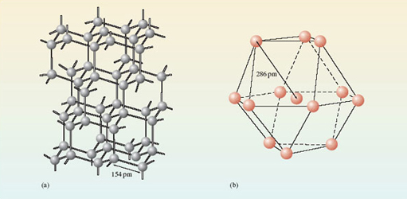
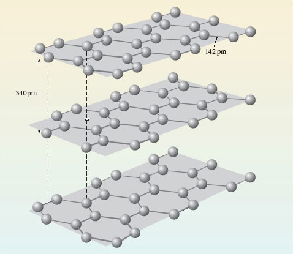

2.4 Extended structures
In session 1, you looked at the diamond and graphite allotropes of carbon, these will be revisited here, together with the metal aluminium.
Figure 7 shows the environment of each atom in diamond and metallic aluminium.
Are these substances molecular or non-molecular?
Both substances are non-molecular.

Looking at diamond (Figure 7a), describe the environment around each carbon atom.
There are four surrounding carbon atoms at the corners of a tetrahedron, and as shown in the figure the C-C distance is 154pm.
In aluminium (Figure 7b) each atom has twelve surrounding aluminium atoms, and the Al-Al distance is 286pm.
The key point is, there is no justification for dividing the structure up into molecules containing two or more atoms. The individual units shown here extend throughout a crystal of the substance, and its formula will vary with crystal size.
For this reason the term extended structure is used to describe non-molecular substances of this type.
In Figure 7 (a and b), the extension is in three dimensions, but it may sometimes occur in one or two.
Sticking with carbon, let’s look again at one of its other allotropes – graphite (Figure 8).

Describe the environment around each carbon atom in graphite.
Each carbon is surrounded by three others, and the atoms form regular hexagons, arranged in parallel sheets. Within the sheets, the C-C distance is 142pm, whereas the shortest distance between the sheets is 340pm.
So graphite is an extended structure, but this time the extension is in two dimensions.
Although not considered here substances do exist which may be described as one dimensional structures.
OpenLearn - Discovering chemistry
 Except for third party materials and otherwise, this content is made available under a Creative Commons Attribution-NonCommercial-ShareAlike 4.0 Licence, full copyright detail can be found in the acknowledgements section. Please see full copyright statement for details.
Except for third party materials and otherwise, this content is made available under a Creative Commons Attribution-NonCommercial-ShareAlike 4.0 Licence, full copyright detail can be found in the acknowledgements section. Please see full copyright statement for details.